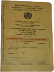

Indienreise
Vier Wochen reisen durch einen Subkontinent (Karte, Bilder).
Impfungen
11. Januar 2011
Im Urlaub will man seine Zeit sicherlich nicht damit verbringen, krank zu sein. Um dem vorzubeugen, haben wir uns im Berliner Centrum für Reise- und Tropenmedizin impfen lassen. Wir wurden dort schon vor unserer letzten Reise gut beraten. Diesmal lies die Beratung zwar etwas zu wünschen übrig, aber wir werden die Reise hoffentlich trotzdem überleben.

Die Ärztin verabreichte mir die noch fehlende letzte Hepatits-Impfung und impfte mich gegen das Japanische Fieber und Meningokokken. Ein klein wenig überrascht war ich bei der Choleraimpfung. Für diese bekamen wir einfach die Packung mit dem Impfstoff in die Hand gedrückt. Selberimpfen ist angesagt. Es handelt sich um eine Schluckimpfung und wir dürfen selbst ins Impfbuch eintragen, wann wir den Impfstoff zu uns nehmen.
Zu guter Letzt bekam ich die Rechnung für den ganzen Spaß präsentiert. Das waren fast dreihundert Euro doch ich hoffe, dass die Krankenkasse die Kosten wieder übernimmt.
Landkarten
22. Februar 2011
Es sind nicht einmal mehr zwei Wochen bis zum Beginn der Reise und wir mussten feststellen, dass uns noch das notwendige Kartenmaterial fehlt. Also bin ich heute in meiner Mittagspause zur Reisebuchhandlung des Camp4 gefahren und habe mich eingedeckt. Der Verkäufer hat mir ein Dreierset (Nordost-, Nordwest- und Südindien) vom Reise Know-How Verlag empfohlen. Die sind reiß- und wasserfest und machen einen sehr guten Eindruck. Den Rest meiner Mittagspause habe ich damit verbracht, in dem Buchladen zu stöbern. Es gibt dort eine Vielzahl von Büchern mit Reiseberichten und eine sehr gut Auswahl an Reiseführern. Wahrscheinlich werde ich nach der Indienreise wieder in den Laden zurückkommen und mich zu zukünftigen Zielen inspirieren lassen.
Fliegen
5. März 2011
Heute begann die große Reise. Nachdem wir morgens noch einen Gast verabschiedet haben, verliesen wir gegen halb zehn unsere Wohnung und fuhren zum Flughafen Tegel. Wir standen etwa zwanzig Minuten in der Check-In-Schlange und trafen dabei einen Mann, der ebenfalls nach Delhi flog, um dort seine Liebe wiederzutreffen. Bei einer kleinen Unterhaltung gab er uns seine persönlichen Eindrücke von Dehli und Indien wieder. Wir wussten jetzt, daß uns eine facettenreiche Stadt erwartet, über der der Geruch von Abfall und verbrannten Holz liegt. Nach einem Frühstück und etwas Warten konnten wir das Flugzeug nach Istanbul besteigen.
Nach wenigen Stunden Flug breitete sich unter uns das Marmarameer aus und der Pilot setzte zur Landung in Instanbul an. Beim Landeanflug hatten wir einen sehr schönen Blick über die sonnige Metropole und sahen eine Unmenge von Frachtern am Eingang des Bosporus. Dieser Anblick war so schön, dass Istanbul in die Liste künftiger Urlaubsziele aufgenommen wurde. Wir verbrachten eine Stunde am modernen Flughafen, ehe die Reise nach Delhi weiterging.
Die letzte Etappe nahm weitere fünf Stunden in Anspruch und wir wurden von Turkish Airlines mit allem Erdenklichen wie Decken, Socken, Essen und noch vielen mehr eingedeckt. Auf den Monitoren konnten wir verfolgen, wie Vorderasien und Persien unter uns vorbeizogen. Gegen vier Uhr sahen wir das Lichtermeer von Delhi. Nach der Landung liefen wir einige Zeit durch das leergefegte, mit Teppichen ausgelegte Empfangsgebäude, ehe wir die Passkontrolle erreichten. Diese fand in einem modern eingerichteten Teil des Flughafens statt. Dies war insofern erfreulich, als daß in mehreren Foren von einem heruntergekommenen Flughafen die Rede war.
Die Formalitäten war nach einigen Minuten Anstellen erledigt. Am Wechselschalter tauschten wir ein paar Euros gegen unsere ersten Rupien und bezahlten damit das Prepaid-Taxi an einem Schalter im Fluggebäude. Wir verliesen das Flughafengebäude und betraten zum erstenmal Delhi. Draußen war es dunkel, angenehm warm und die Luft war nicht annähernd so schlecht, wie nach dem Gespräch am Tegeler Flughafen befürchtet.
Wir blickten uns um und sahen den Taxifahrer, der uns schon zuwinkte. Er wurde offensichtlich vom Schalterbeamten über unser Kommen informiert worden. Zuerst versuchte er mit einem Helfer unsere schweren Rucksäcke auf das Dach zu hieven und dort mit den Rucksackgurten festzumachen. Glücklicherweise konnten wir ihn überzeugen, die Rucksäcke mit ins Taxi zu nehmen. Das wäre doch etwas abenteuerlich gewesen und wir wollten nicht gleich am ersten Tag einen Großteil unseres Gepäcks verlieren. Nach einer halbstündigen Fahrt durch das morgentliche Delhi erreichten wir schließlich das Hotel.